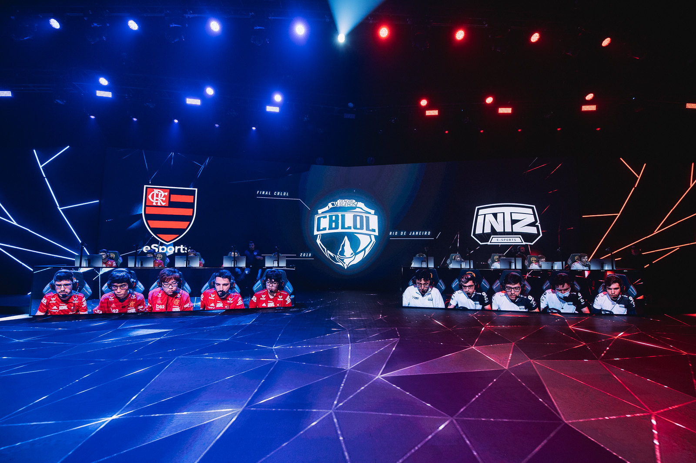

Eventos de E-Sports afetados pelo Covid-19
Devido a pandemia, inúmeros eventos de E-Sports tiveram que ser cancelados, adiados ou alterados.
Montamos para você uma lista de eventos que foram afetados.
Apex Legends
O primeiro grande evento de Apex Legends Global Series que aconteceria entre os dias 13 e 15 de março acabou sendo adiado e está sendo realizado agora online. O torneio teve inicio dia 21 de junho com os campeonatos regionais e deve ir até meados de setembro. O prêmio total é de 500 mil dólares.
Counter Strike: Global Ofensives
IEM Katowice foi um dos eventos mais famosos afetados pelo coronavírus, o governo da Polônia ordenou o fechamento do evento ao publico logo antes de seu início. A competição aconteceu na arena, mas com as cadeiras ficaram vazias.
O torneio seguinte, FlashPoint League ocorreu em um estúdio e foi transmitido online. O time espanhol Mad Lions levou pra casa 500 mil dólares pelo primeiro lugar no campeonato, o time brasileiro MIBR ficou em segundo, com o premio de 250 mil dólares.
O torneio ESL Major in Rio foi adiado e deve ocorrer entre os dias 19 e 22 de novembro, onde os times irão brigar pelo prêmio total de 2 milhões de dólares.
O campeonato Blast Premier Springs foi dividido em duas regiões, sendo elas Americas e Europa, os jogos então ocorreram online e foram transmitidos pela plataforma de streaming twitch.
O Dreamhack 2020 seguiu o mesmo caminho e também foi adiado. Os jogos começaram 19 de maio e foram até 14 de junho. O time brasileiro Furia Esports ficou em primeiro lugar e levou pra casa 40 mil dólares.
Dota 2
ESL e Valve decidiram adiar os jogos de março da ESL One Los Angeles 2020 Dota 2 Major devido ao vírus e ao bloqueio do turismo que havia sido decretado pelo governo americano. O prêmio total foi de 375 mil dólares e as partidas foram travadas entre 28 de março e 19 de abril.
Outros eventos acabaram sendo cancelados, como Epicenter Major e Dota Pit Minor.
Farming Simulator
A competição de Farming Simulator League foi na arena em Katowice, porém, sem público. Foi anunciado que todos os torneios a partir de então serão transmitidos apenas via streaming a partir de um estúdio na Alemanha.
Hearthstone
Hearthstone Masters Tour seria hospedado na Indonésia, mas em fevereiro decidiam mudar o campeonato para Los Angeles. Devido a piora na situação dos Estados Unidos os jogos acabaram sendo feitos online e transmitidos pela internet. Os jogadores foram recompensados pelos gastos com a viagem em até 1500 dólares.
League of Legends
Todos os grandes torneios de League of Legends foram afetados de alguma maneira. Tanto League of Legends Championship Series quanto League of Legends European Championship foram suspensos, sendo posteriormente anunciado que os jogos seriam online e os competidores poderiam jogar de casa.
O evento LEC Spring Finals que ocorreria em Budapeste foi movido para o LEC Studios em Berlin e as partidas foram jogadas sem público presente no local. LCS Spring Finals foi movido de Frisco, no Texas para o LCS Studio em Los Angeles.
Na Ásia, o League of Legends Pro League chinês foi transmitido online e os jogadores foram obrigados a passar 14 dias em quarentena antes dos jogos. Enquanto isso, os jogos coreanos foram suspensos, retornando em abril.
CBLOL e European Masters foram jogados remotamente.
Overwatch
Todas as partidas de abril da Overwatch League foram canceladas. Os jogos foram retomados no formato online em 21 de março.
PUBG
PUBG Global Series foi um dos primeiros torneios cancelados de 2020 e seria o primeiro torneio de PUBG do ano.
Rainbow Six Siege
A Ubisoft resolveu cancelar as finais de Rainbow Six Siege Pro League Season x1 Finals em São Paulo e na Ásia. O prêmio total foi distribuído para os melhores times de cada região.
Fontes:
- Página oficiais:
- EA Games
- ESL One
- Hearthstone
- PUBG
- Twitters oficiais:
- LCS
- LEC
- LPL
- LOl E-Sports BR
- R6 E-Sports
- Outros:
- Liquipedia
- E-Sports Insider

Hardware

Análises